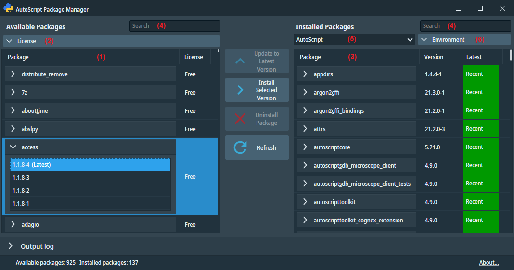

AutoScript Package Manager
The AutoScript Package Manager is a user interface extension designed for the
Enthought Deployment Manager command line tool (EDM).
It simplifies the management of installed packages, removing the need to interact with EDM's command line interface.

On the left side (1), the tool displays the list of available packages on the Enthought Deployment Server
along with license information for each package.
Packages can be filtered according to their license by clicking the License button (2)
and selecting the desired license types.
On the right side (3), a list of currently installed packages in the active Python environment is displayed,
along with version information and a status indicator.
The status color is green if the package version is the most recent available version.
The status is orange if a newer version exists on the deployment server.
You can easily add a new package by first selecting it in the left pane and then clicking the
Install Selected Version button. Similarly, you can update or remove an installed package by selecting it in the
right pane and clicking the Update to Latest Version or Uninstall Package buttons.
Note that installing or updating a Python package resolves the entire chain of dependencies on other packages.
Therefore, adding or updating a single package may result in adding or updating multiple dependent packages.
You will be asked to review and approve the list of packages to be added or updated before the changes are applied.
The two search boxes at the top (4) help you quickly navigate to the desired package by removing all packages that
do not contain the entered text in their name.
The Package Manager also provides the capability to create or remove virtual environments using the Environment
button (6).
You can create a new environment with or without AutoScript packages. The drop-down button (5) presents
a list of all local Python environments. Selecting an environment will activate it within the Package Manager,
and the right-side pane will be refreshed to display the packages installed in that specific environment.
Environments can be also deleted, with the exception of the default "AutoScript" environment.
The Package Manager requires an active Internet connection.
For further information about the Package Manager, please refer to the chapters on package management and environment management.